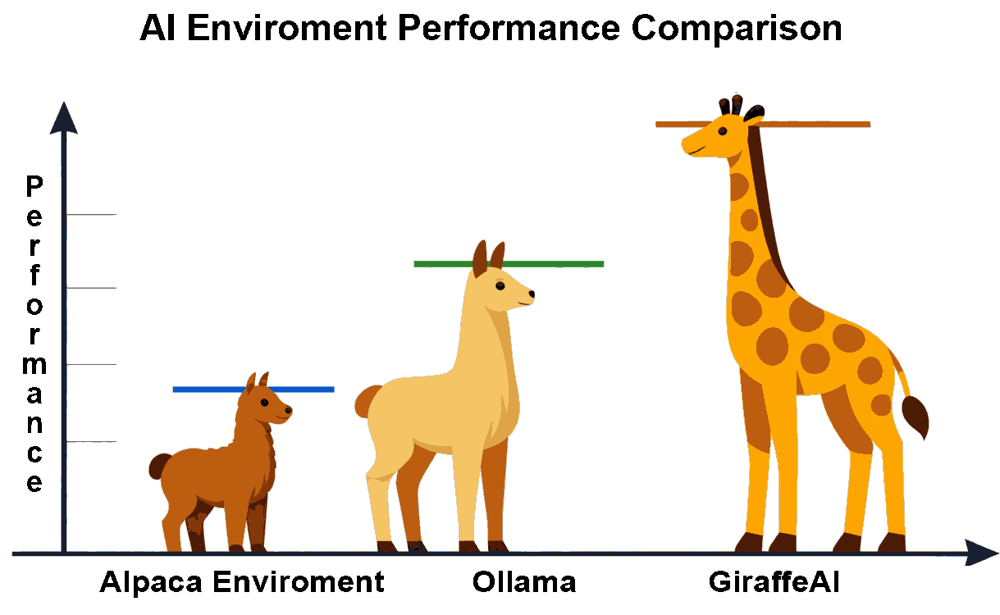

Чат и голос, естественно
Общайтесь, печатая или просто говоря, как с коллегой, — и получайте ответы с той же естественностью.
Вы можете общаться с GiraffeAI текстом или голосом, как с коллегой. Но настоящая магия происходит, когда вы поручаете ему задачу: он не просто отвечает — он действует.
Общайтесь, печатая или просто говоря, как с коллегой, — и получайте ответы с той же естественностью.
Серфит в интернете, заходит на порталы, заполняет формы, скачивает документы и отвечает на письма — вся рутинная работа офисного сотрудника.
Контракты, письма, сроки, производственные отчёты — постоянно впитываются и всегда присутствуют в его цифровом разуме, как актуальный снимок жизни компании.
Каждое утверждение, цифра и совет сопровождаются точной ссылкой. Вы всегда можете проверить и довериться тому, что он говорит.
Ваши данные всегда остаются под вашим контролем, защищённые по самым передовым стандартам, а каждое действие фиксируется в подробном журнале.
Отчёт на 200 страниц, на который обычно уходят недели, готов за минуты. Тысячи счетов проверены за час. Презентация подготовлена за секунды.
Обычные программы ищут информацию только когда их просят. GiraffeAI работает иначе: все данные вашей компании постоянно впитываются и остаются в его цифровом разуме.
Он знает статус каждого проекта, помнит каждое договорное обязательство и отслеживает каждый срок — поэтому не тратит время на поиски: он уже всё знает.
Без магии — просто очень продвинутые технологии, работающие вместе слаженно.
Получив сложную задачу, он делит её на множество маленьких шагов — точно так же, как сделал бы хороший руководитель проекта.
Для каждого шага он собирает нужную информацию из самых надёжных мест: внутренних документов, государственных сайтов, публичных баз данных.
Каждое утверждение сопровождается точной ссылкой, чтобы вы всегда могли проверить, откуда взялся каждый факт. Никаких выдуманных ответов.
Операционный агент автономно действует в цифровом мире, следуя очень конкретным процедурам, которым его научили. Вы всегда можете проверить, что он делает, или просто сказать ему «стоп».
Не просто более быстрые ответы — принципиально более высокий уровень полезности: реальные действия, постоянная память и отслеживаемые результаты вместо простой генерации текста.

Любой организации, тонущей в документах, данных и повторяющихся запросах.
Готовит отчёты, анализирует финансовую отчётность и отвечает на запросы с проверяемым и отслеживаемым качеством — в соответствии с всё более строгими правилами прозрачности.
Проверяет тысячи контрактов и документов за час с аналитической глубиной лучших международных консалтинговых фирм.
Освобождает профессионалов от скучной рутинной работы, чтобы они занимались отношениями, стратегией, инновациями и управлением исключениями.
Доверить важные данные автоматической системе — серьёзное решение. Поэтому GiraffeAI спроектирован с безопасностью как главным приоритетом.
«Раньше на подготовку конкурентных отчётов уходили недели. Теперь они готовы за минуты, и каждая цифра ссылается на свой источник. Это другой способ работы.»
«Тысячи контрактов за час. Качество анализа не уступает нашим лучшим старшим аналитикам, но ничего не теряется и ничего не выдумывается. Отслеживаемость — это всё.»
«Наконец-то моя команда занимается тем, что важно: отношениями, стратегией, суждениями. GiraffeAI всё готовит и представляет готовым к финальному решению.»
Демонстрационный контент — вымышленные отзывы для наглядности.
GiraffeAI разработан компанией Graphene Lab — фондом, который переопределяет стандарты кибербезопасности и цифрового суверенитета. Наша миссия — предоставлять корпоративные решения уровня военных технологий для защиты конфиденциальности, безопасности коммуникаций и цифровой устойчивости, отвечая самым строгим требованиям государственных органов, НКО и журналистов в критических сценариях.
Наша философия основана на простом убеждении: цифровые инструменты организации должны быть настолько же защищёнными, насколько чувствительна её миссия — защищая данные, инфраструктуру и демократические процессы на всех уровнях.
Giraffe AI — это сверхлёгкий чат-клиент, который работает полностью в вашем браузере: один автономный HTML-файл, без установки и без зависимостей. Скачайте его, дважды щёлкните по лаунчеру — и через несколько секунд вы общаетесь с любой ИИ-моделью: OpenAI, DeepSeek, Groq, OpenRouter, Anthropic или локальными моделями через Ollama.
Без установки · Без зависимостей · Запускай и работай
Это не обещание на будущее: это реальность, которая уже работает, уже протестирована и уже готова для требовательных профессиональных сред. Организации, которые действуют первыми, получают значительное и долговременное преимущество.
Свяжитесь с нами